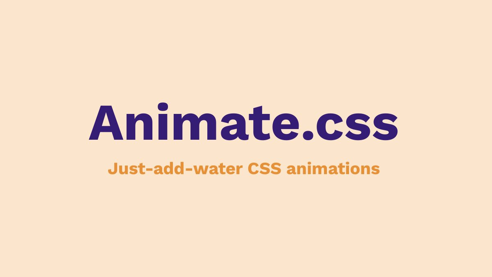

Animate CSS
Потужна бібліотека, яка надає набір заданих готових до використання анімаційних класів до елементів.
ПерейтиПотужна бібліотека, яка надає набір заданих готових до використання анімаційних класів до елементів.
ПерейтиБібліотека CSS, яка спеціалізується на анімаційних ефектах при наведенні курсора миші на елементи.
ПерейтиБібліотека, яка надає готові анімаційні приклади та код CSS для використання у веб-проектах.
ПерейтиЛегка бібліотека анімації із простим, але потужним API. Працює з властивостями CSS, SVG, атрибутами DOM.
ПерейтиПотужна бібліотека анімації для веб-розробки. GSAP пропонує широкий спектр функцій і можливостей.
Перейти
Ви можете додати будь-який матеріал, який буде допомагати іншим людям навчатись у веб-розробці.
Додати